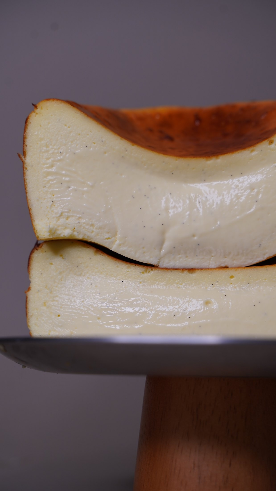

Look at the whole menu
Review the current dessert offering in the context of your venue, guests and kitchen. Identify where a new dessert can add something useful.
FOR CAFÉS & RESTAURANTS
A thoughtful dessert should belong to your venue—and make sense in your kitchen. Together, we turn an idea into a dish your team understands how to prepare and present.

THE COLLABORATION
For cafés and restaurants introducing desserts, refreshing an existing menu or bringing more definition to their sweet offering. The scope and dessert direction are agreed before we begin.
Review the current dessert offering in the context of your venue, guests and kitchen. Identify where a new dessert can add something useful.
Create one or more new dessert items within the agreed scope, considering flavour, texture and the way each portion is presented.
Recipe and preparation sheets give the kitchen a practical reference. Team training connects the written method with the work at the bench.
FROM THE PORTFOLIO
A cross-section, a finishing gesture, a deliberate portion: these are the details behind a dessert that feels complete. The portfolio is a starting point for your own menu, not a fixed catalogue.

Colour and texture, considered together.

Finishing is part of the recipe.

Technique becomes part of the team’s routine.
HOW WE WORK TOGETHER
The programme is organised across two visits over two days. We agree the menu direction and the extent of development and training in advance.
Tell me about your venue, existing menu and what you would like to introduce or improve.
Set the dessert brief around your kitchen, ingredients and the scope of the collaboration.
Bring the agreed desserts into focus and prepare recipe and preparation sheets.
Train the kitchen team in the preparation and presentation of the agreed dishes.
GOOD TO KNOW
No. The programme is also suitable for an existing café or restaurant that wants to introduce new desserts or develop its current offering.
The agreed dessert development, recipe and preparation sheets, and kitchen training. The number of desserts and the detailed scope are confirmed together before the programme begins.
Yes. Share dietary requirements and allergies at the start. Recipe adaptation, including vegan desserts, is part of my experience; feasibility depends on the dessert and the kitchen.
LINA.Pastry is based in Shanghai and available for projects across China and in Moscow. Include your city and preferred timing in the enquiry so we can discuss arrangements.
LET’S MAKE SOMETHING TOGETHER
Start with your venue, city, current menu and the kind of dessert you have in mind.
Discuss your menu